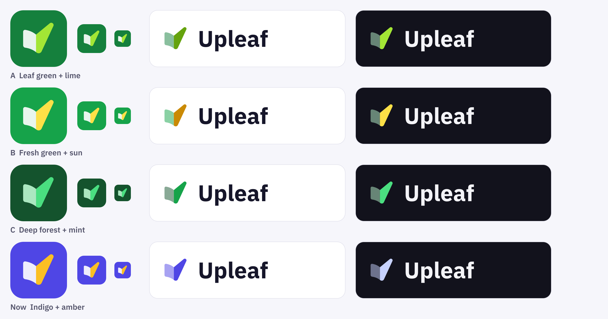

Chosen on 14 November 2026: the name Upleaf, the book-and-tick mark, and leaf green with lime. Below: the chosen brand, then the three logo concepts as first explored (in the earlier indigo), and every name that was checked.

Leaf green #15803d for the app and its icon; lime #a3e635 for the lifted page, which reads as a leaf going up. On a white background the lime is darkened so it stays visible. Students who pick their school’s colours still get those: the mark follows the theme.
An open book whose right page lifts into a tick: study that ends in “got it”. The most distinctive of the three, and it still reads at 16 pixels.
A loop that closes with a tick: practise, repeat, know it. Clean and friendly, but check-in-a-circle marks are common in task apps.
Two cards, the front one ticked: notes and flashcards done. Clear, but close to the standard “copy” and “checkbox” icons.
These are the finished files in lockups/: the lettering (IBM Plex Sans Thai Looped, the app’s typeface) is converted to outlines, so they look the same on any device. Each name has a Latin and a Thai version, for light and dark backgrounds.
| Name | Result | What the search found |
|---|---|---|
| Upleaf a page lifting up, like the logo |
In use elsewhere | No study or education product found. A posture-walking app, “Upleaf: Posture Walks” (Health & Fitness), is on the App Store, and a web agency uses upleaf.com. upleaf.app does not resolve. |
| Termwise wise about the term |
Used by a school app | An app named Termwise is on Google Play: school-management software for Nigerian schools (termwise.org, very few downloads). Not on the App Store in the US or Thailand. termwise.com is for sale; termwise.app is an unrelated browser extension. |
| Semstra from “semester” |
One letter from taken apps | Nothing found under this exact spelling (App Store US and Thailand, Google Play, semstra.com / .app / .co do not resolve). But Semestra, one letter longer and said the same way, is two Education apps on the App Store in Thailand and one on Google Play, all semester planners. |
| Semestra coined English name |
Used by a study app | Three semester-planner apps, one with quizzes and flashcards. |
| Khuenjai ขึ้นใจ know it by heart |
No similar product found | Only other use found: a 2026 pop song of the same name. The simpler spelling Kuenjai is free as well. |
| ThamEng ทำเอง I do it myself |
No similar product found | Only use found: a small handmade-crafts Instagram account. Tutors use the phrase in passing. |
| Maenjai แม่นใจ coined: accurate + confident |
No similar product found | No product found. The same sounds appear as a phrase in Isan song lyrics; worth asking Thai speakers how that lands. |
| Jammaen จำแม่น remember accurately |
No similar product found | No product carries the name, but it is a common descriptive phrase in tutoring adverts, so harder to own. |
| Nuekok นึกออก it comes back to me |
No similar product found | Phrase use only. The romanised spelling is the hardest of the five for English speakers. |
| RianRod เรียนรอด survive your studies |
No similar product found | No product found. It means “just scrape through”, and also reads as the military cadet course (เรียน รด.). |
| Thuanly ทวน + ly review |
No similar product found | No product found, but “Thuan Ly” is a Vietnamese personal name. |
| RooJing รู้จริง truly know |
In use elsewhere | A registered company (supplements), a Chinese-teaching Facebook page and a YouTube show use it; a stock phrase in tutor adverts. |
| Thuan ทวน review |
In use elsewhere | A common Vietnamese name: store searches return dozens of unrelated apps. |
| Jamdee จำดี remember well |
In use elsewhere | A memory-training school uses the same words, and a reminder app is called จำดิ (Jumdi). |
| Fuekfon ฝึกฝน practise, train |
In use elsewhere | A practice-loop app carries “ฝึกฝน (Fuek Fon)” in its Thai App Store title; generic in every practice app’s description. |
| Kati หัวกะทิ top of the class |
In use elsewhere | หัวกะทิ is already a tutoring brand (about 28,000 Facebook followers) and a tutor centre; Kati alone is a fintech app. |
| Koohoo คู่หู sidekick |
In use elsewhere | An AI companion app at koohoo.app and a Thai “Koohoo AI” platform. |
| Lapkom ลับคม sharpen the blade |
In use elsewhere | A teacher-exam prep book and tutors use it; also the everyday term for knife sharpening. |
| Kengkuen เก่งขึ้น getting better |
In use elsewhere | Close to the online school เก่งได้ อะคาเดมี่; in most tutoring adverts. |
| Jodjam จดจำ note down and remember |
Used by a study app | A Thai notes and reminders app on both stores (App Store), and a LINE assistant at jodjam.com. |
| Tiwdee ติวดี good tutoring |
Used by a study app | A paid test-practice product at tiwdee.app and a free exam-practice site at www.tiudee.com. |
| PromSob พร้อมสอบ exam-ready |
Used by a study app | An exam-practice site at promsob.com and a series of apps branded พร้อมสอบ. |
| Khaojai เข้าใจ understand |
Used by a study app | Four products, including a Thai-learning app at khaojai.app. |
| Retainly coined English name |
Used by a study app | A spaced-repetition app, a revision tracker and a UK flashcard company all use it. |
| Loopwise coined English name |
Used by a study app | An online course platform at loopwise.com. |
| Recallo coined English name |
Used by a study app | Several flashcard apps, plus a notes-to-quiz product at recallo.io. |
“No similar product found” means none turned up in web, App Store and Google Play searches on 14 November 2026. It is not a trademark clearance; the chosen name still needs a check with the Thai trademark office (DIP) before launch.